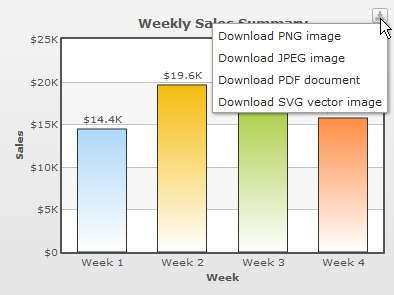

| Exporting Pure JavaScript Charts |
Pure JavaScript charts also provide support for exporting to JPEG, PNG, PDF, SVG formats. Let us see how we can implement this feature. |
| Enabling Export |
|
Similar to FusionCharts XT Flash-based charts, the JavaScript chart's export feature can be enabled by specifying the exportEnabled="1" of the <chart> XML element or exportEnabled:"1" in JSON. The following sample data enables the exporting feature of FusionCharts XT (both Flash and JavaScript charts alike) using the default settings. <chart exportEnabled='1' caption='Weekly Sales Summary' xAxisName='Week' yAxisName='Sales' numberPrefix='$' > {
|
Once the exportEnabled attribute is set, a "Download" button will be displayed on the top-right corner of your chart. This button, when clicked, will provide you a list of various export file formats thereby enabling you to download an image or PDF version of the chart. The following image shows how the list will appear when the above data is used in a column 2D chart.  See it live! During export of the pure JavaScript charts, the chart data is sent to external servers for processing and converting to image. User must have an active internet connection for this feature to work. In case you want to process the exported data on your own server, you may setup the chart to send the data to your own server. The details of how to do the same has been explained later on this page. There is a possibility that the exported image/PDF appears slightly visually different with respect to colors and effects from your original chart that is being exported. FusionCharts XT Flash charts do not have a button to export the chart. Instead, upon right-clicking the Flash charts, users can select exporting options using a context-menu. |
| Customizing the Export Feature |
The export features of the JavaScript charts presently have limited customizability when compared to the Flash charts. This is primarily owing to certain limitations of the present JavaScript export feature. You can hide the "Download" button on the chart using the exportShowMenuItem="0". This will hide the export button. But, you will still be able to export the chart using its JavaScript API similar to FusionCharts XT Flash charts. |
| Setup your own server to process and export JavaScript charts |
|
You may want to set up the export service of the JavaScript charts on your own server. For this, you require PHP and Java running in your server. A JavaScript chart sends the export data to a PHP file. This PHP file (present as index.php in the Download Pack > ExportHandlers > JavaScript folder) relays the data to a third party Java library named Batik, which in turn, converts the exported data into the required export format. Perform the following steps to set up your server:
For detailed information on setting up the export modules please refer to http://www.highcharts.com/documentation/how-to-use. |